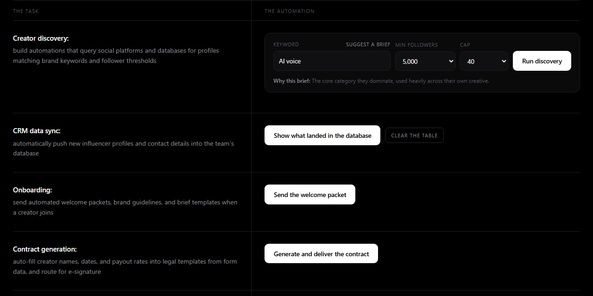

I build automations that replace manual work, like finding leads, running outreach and managing
creator programs, and I build them to keep running without someone watching.
Remote from BrazilWorks US hours (UTC-3)Fluent EnglishContract or full-time
6 workflowsrun a whole creator program, from discovery to weekly reports
122 testsbehind my outreach app, so it never sends the same email twice
5s → <1sload time after rebuilding a law firm's website
Day oneinbound calls after launching a client's first site and Google Ads
Selected work
What the problem was, what I built and where it stands today.
Automation · n8n + AI
Creator program on autopilot
The problem
An influencer program runs on spreadsheets and DMs: finding creators, sending contracts, chasing posts and
building reports by hand. It stops scaling at a few dozen creators.
What I built
Six connected workflows: find creators on TikTok by keyword and audience size, let AI score how well each
fits the brand, sync them into a CRM without duplicates, send the welcome packet, generate the contract,
remind creators before deadlines, track their posts and deliver a weekly report.
Built to be trusted
One switch pauses everything, every error sends an alert, and the public demo only works with an access key.
Status
A working demo you can click through, with all workflows published on GitHub.
85-second demo: the whole program running live, with alerts arriving in Telegram.

The demo page: every task on the left, a button that runs it on the right.
Product · email, phone, social
Outreach Center: one app for all outreach
The problem
Cold outreach usually means three paid tools (email, AI calls, social posts) that don't talk to each other,
and one duplicate cold email can damage a sending domain.
What I built
A single app that runs email campaigns with follow-ups, reads every reply in one inbox, shows the results of
AI phone calls and schedules social posts. It never sends the same email twice, even if the computer crashes
mid-send.
Status
Built and tested, with 122 automated tests. The code is private; the source is available to hiring teams on
request.
Demo data: every company, person and number is fictional.
Client · law firm, 2026
Fixed a law firm's website and email
Their site took about 5 seconds to load, they had lost control of their domain, and emails to courts and
partners were landing in spam. I recovered the domain, moved it to Cloudflare, fixed the email setup and
rebuilt the site to load in under 1 second, then explained it all to the partners in a plain-language report.
A remodeling company in Atlanta had no website. I built one with lead capture and launched their first Google
Ads campaign. They received inbound calls on day one.
In progress · AI voice
AI outbound caller
A voice agent that calls local businesses and offers a free audit. Leads come from Google Maps, every call is
analyzed by AI, and accepted or rejected results are written back automatically, with retries for people who
didn't pick up.
How I work
What working with me looks like.
Clear before clever
I write down what "done" means with the people who do the work today, then build
the smallest thing that does it.
Built not to fail quietly
Pause switches, error alerts and no duplicates. An automation that breaks
silently costs more than the manual work it replaced.
Plain language
I came from mechanical engineering, so I'm used to explaining technical work to people
who don't speak the jargon.
Background
2024 – nowFreelance AI automation & web developer
2022 – 2023Full-stack web development, The Odin Project
2019 – 2021Mechanical design engineer at Vale, co-developed a patented autonomous railway
inspection vehicle
2016 – 2021B.Eng. Mechanical Engineering, IFES
Tools
n8n · Clay · Instantly · Vapi · OpenAI and Claude APIs · Zapier · Make · Airtable · Apify ·
Google Sheets · LinkedIn Sales Navigator · TypeScript · React · Node.js · Playwright · Cloudflare · Netlify
I build with Claude Code as a pair programmer: I own the design and the testing, and it speeds
up the typing.